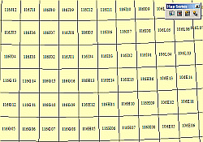
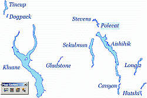
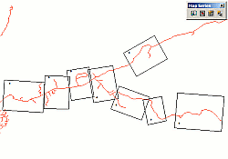

DS MapBook is a developer sample for ESRI's ArcMap which simplifies the generation of map series. MapBook allows the creation of multiple maps from a single ArcMap .mxd file. Map series can be tiled like USGS or NTS quadrangles, discontinuous (e.g. lakes of the Yukon), or in strips (e.g. following a road). The best introduction to its features is ArcGIS Software Simplifies Map Book Generation from the summer 2002 issue of Arc User Online. The link to the sample in that article is for v8.3. For v9.2, you want to go to ArcObjects Online.
|  |  |  |
The Map Book Project (this site) is an open source and volunteer effort to extend, enhance, and fix the bugs in the developer sample. The project itself is still in it's early stages. All we've accomplished to this point is to put the code for the last four releases into a version control repository (svn) and collect some ideas of the first set of bugs and enhancements to tackle.
Duane Wilkins in New Zealand has also put together a Quick Guide to Map Series Maker (pdf 1.8mb) and graciously contributed it to the project, now in svn.
Significant milestones in svn are:
The Map Book Project is an independant endeavour and not endorsed by ESRI, although it is built on code developed by them and put out for distribution.
So who's running the project?
Matt Wilkie - project and website administrator. Matt is not a developer though he has been known from time to time to program his way out of a (very wet) paper bag.
Aubrey Sicotte - has more developer smarts than Matt, having actually gone to school, but still getting his feet wet in ArcMap VBA.